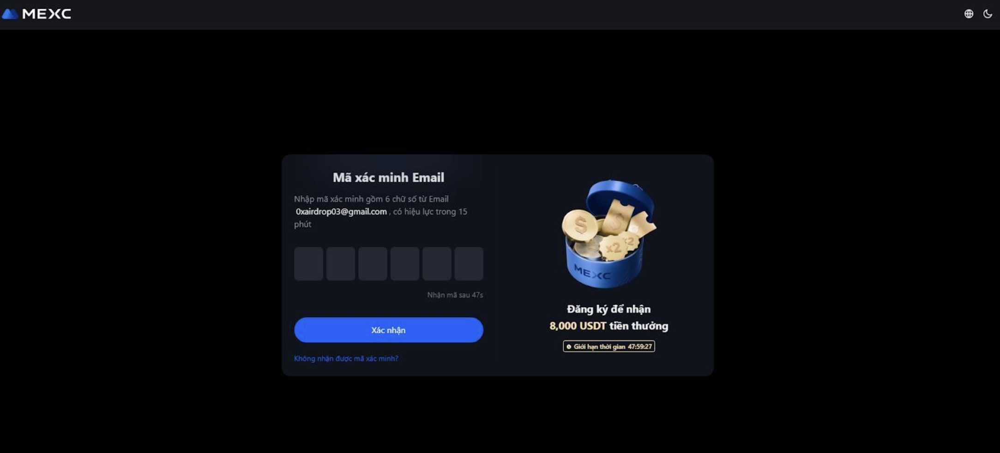
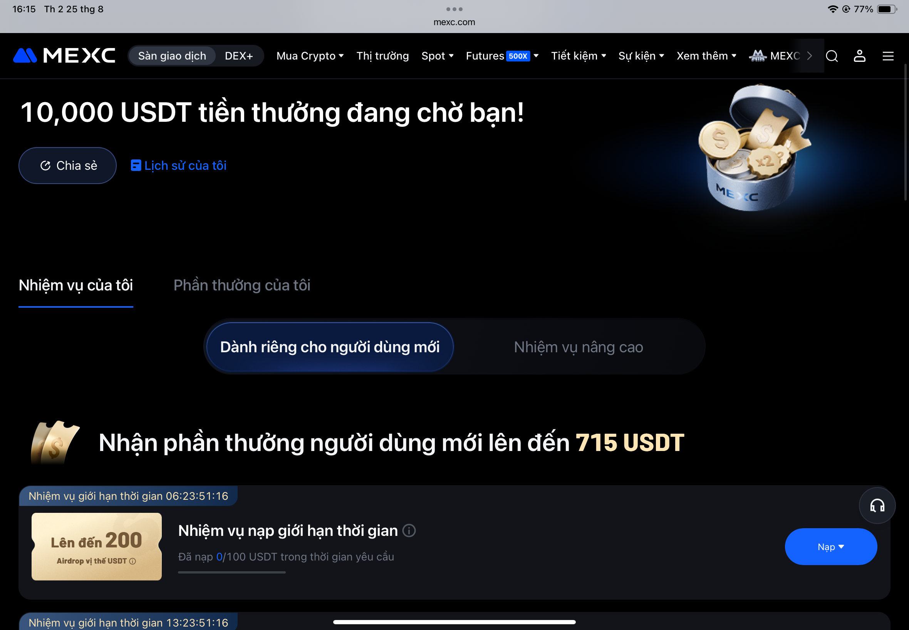

🌠Sà n Giao Dịch Tiá»n Mã Hoá là gì?
Sà n giao dịch tiá»n mã hoá hay còn gá»i là Sà n giao dịch tiá»n điện tá» là một doanh nghiệp cho phép khách hà ng thực hiện giao dịch tiá»n điện tá» hoặc tiá»n kỹ thuáºt số để đổi lấy các tà i sản khác, chẳng hạn như tiá»n định danh thông thường( VND , USD..) hoặc các loại tiá»n kỹ thuáºt số khác. Các sà n giao dịch có thể chấp nháºn thanh toán bằng thẻ tÍn dụng, chuyển khoản ngân hà ng hoặc các hình thức thanh toán khác để đổi lấy tiá»n kỹ thuáºt số hoặc tiá»n điện tá» và ngược lại.
Đồng thá»i là một ná»n tảng trực tuyến cho phép người dùng mua, bán, trao đổi các loại tiá»n điện tá» như Bitcoin, Ethereum và các tà i sản kỹ thuáºt số khác, hoạt động như một trung gian kết nối người mua và người bán. Và đảm bảo quyá»n lợi của cả hai bên bán và bên mua. Các sà n nà y có thể được phân loại thà nh sà n táºp trung (CEX), sà n phi táºp trung (DEX), và sà n P2P (ngang hà ng), mỗi loại có những đặc điểm riêng vá» quản lý, bảo máºt và quyá»n kiểm soát tà i sản của người dùng.
Chức năng chÍnh của sà n giao dịch tiá»n điện tá»:
Kết nối người mua và người bán:
Sà n giao dịch là nơi tạo ra thị trường, giúp người có nhu cầu mua và người muốn bán tiá»n điện tá» gặp nhau và thực hiện giao dịch. Chúng xá» lý các lệnh giao dịch, khớp lệnh mua và bán, và ghi lại các giao dịch trên blockchain (đối với sà n phi táºp trung) hoặc trong hệ thống của sà n.
Là Bên Trung gian để đảm bảo lợi Ích của cả Bên Mua và Bên Bán
Khi bên bán muốn bán tiá»n điện tá» ra tiá»n Pháp Định và bên Mua muốn dùng tiá»n phát định để mua Usdt hay một loại tiá»n điện tá» nà o đó. Thì sẽ phát sinh giao dịch . trong đó Sà n giao dịch trở thà nh bên trung gian, sẽ Khoá tà i sản kỹ thuáºt số của bên bán để đảm bảo quyá»n lợi bên mua nếu bên mua khiếu nại do bên bán vi phạm không mở khoá.
Các loại sà n giao dịch tiá»n điện tá» phổ biến:
Sà n táºp trung (CEX - Centralized Exchange):
- Đặc điểm: Do một công ty hoặc tổ chức điá»u hà nh, có giao diện thân thiện, dễ sá» dụng, tÍnh thanh khoản cao và hỗ trợ nạp/rút tiá»n pháp định (tiá»n truyá»n thống).
- Và dụ: Mexc, Binance..
Tại sao cần chá»n sà n giao dịch uy tÍn?
Việc lựa chá»n một sà n giao dịch tiá»n điện tỠđáng tin cáºy là rất quan trá»ng để bảo vệ tà i sản của nhà đầu tư khá»i các rủi ro mất mát và lừa đảo, vì thị trường nà y có nhiá»u biến động và không phải sà n nà o cũng đảm bảo an toà n cho nhà đầu tư. Mặc dù có nhiá»u loại sà n và và khác nhau nhưng chúng tôi chỉ phân tÍch Sà n táºp trung (CEX - Centralized Exchange) uy tÍn , phổ biến, có mức độ an toà n cao .
🌠MEXC-SÀN GIAO DỊCH TIỀN ĐIỆN TỬ UY TÍN TRÊN THẾ GIỚI HIỆN NAY
MEXC (hay MEXC GLOBAL) là một sà n giao dịch tiá»n mã hóa toà n cầu, được thà nh láºp và o năm 2018 tại Singapore. Sà n cung cấp ná»n tảng giao dịch cho nhiá»u loại tà i sản kỹ thuáºt số như Bitcoin, Ethereum, XRP và hà ng nghìn altcoin khác cùng với các dịch vụ như spot, futures và nhiá»u sản phẩm tà i chÍnh khác.
Với khát vá»ng vươn tầm trở thà nh sà n giao dịch tiá»n điện tá» hà ng đầu thế giới, MEXC không ngừng mở rộng phạm vi hoạt động, hiện diện tại hơn 170 quốc gia và hỗ trợ nhiá»u ngôn ngữ. Cùng với đó, sà n cung cấp hơn 2900 cặp giao dịch spot và 700 cặp giao dịch futures, mang lại sự đa dạng cho người dùng.
MEXC hiện nằm trong top 10 sà n giao dịch hà ng đầu với khối lượng giao dịch ấn tượng, đạt khoảng 4 tỷ USD mỗi ngà y trên thị trường spot và lên đến 24 tỷ USD đối với giao dịch futures.
Các ưu điểm của sà n MEXC
- Đa dạng sản phẩm và dịch vụ: MEXC cung cấp nhiá»u cặp giao dịch (spot và futures) cùng các sản phẩm hữu Ích như quỹ ETF, NFT Index, và Launchpool, giúp người dùng có nhiá»u lựa chá»n đầu tư.
- Phà giao dịch cạnh tranh: MEXC là một trong những sà n có phà giao dịch rẻ nhất hiện nay, với phà Maker 0% và phà Taker chỉ 0.05% (Spot), giúp bạn tiết kiệm chi phÍ.
- Bảo máºt và hiệu suất vượt trội: Sà n áp dụng các biện pháp bảo máºt tiên tiến như xác thực hai yếu tố (2FA) và lưu trữ tà i sản trong và lạnh. Hệ thống có khả năng xá» lý 1.400.000 lệnh mỗi giây, đảm bảo giao dịch diễn ra nhanh chóng.
- Hỗ trợ khách hà ng chuyên nghiệp: Đội ngũ hỗ trợ 24/7 với nhiá»u ngôn ngữ, sẵn sà ng giải đáp má»i thắc mắc của bạn.
- Thân thiện với người mới: Giao diện dễ sá» dụng, trải nghiệm mượt mà trên các thiết bị di động, và có nhiá»u chÍnh sách ưu đãi dà nh cho người dùng mới.
Đánh giá: Với bá» dà y kinh nghiệm lâu năm trong nghà nh Crypto, sự phổ biến toà n cầu , tiá»m lực tà i chÍnh hùng mạnh. Cộng thêm lượng khách hà ng đông đảo. Đồng thá»i với công nghệ bảo máºt cao, giao diện dễ sá» dụng và đặc biệt có nhiá»u ưu đãi cho các khách hà ng mới. Với kinh nghiệm sá» dụng nhiá»u sà n giao dịch khác nhau, Chúng tôi đánh giá rất cao Sà n MEXC trên tất cả các tiêu chà đá»u phù hợp . chúng tôi đánh giá là sà n Uy tÍn, tốt nhất hiện nay dà nh cho người mới bắt đầu.
Đánh giá riêng của chúng tôi là 9,5 điểm / 10 điểm.
Sà n Binance: Đánh giá nhanh
Binance là sà n giao dịch lớn nhất thế giới, nhưng có thể phức tạp với người mới.
- Giao diện và tÍnh năng phức tạp, nhiá»u chức năng không cần thiết cho người mới.
- Các vấn đỠpháp lý tại một số quốc gia có thể gây lo ngại.
- Ít chÍnh sách ưu đãi cho người dùng mới so với MEXC.
Chúng tôi đánh giá Binance 8/10 điểm, và khuyến nghị MEXC là lựa chá»n tốt hơn cho người mới.
Do đó chúng tôi đang sá» dụng MEXC, và lựa chá»n MEXC là m đối tác lâu dà i để phát triển và trao niá»m tin. Còn bạn thì sao? Bây giá» Chúng ta hãy cùng tìm hiểu cách tạo Tà i Khoản trên Sà n MEXC, Xác Minh danh tÍnh , Và cà i đặt bảo máºt cho tà i khoản.
Hướng Dẫn SỠdụng sà n MEXC
Bước 1: Tạo tà i khoản
Truy cáºp và o Trang Web đăng ký của MEXC. Bạn có thể sá» dụng số điện thoại hoặc email để đăng ký. Hãy chắc chắn rằng bạn nháºp đúng thông tin và tạo một máºt khẩu mạnh.máºt khẩu mạnh hợp lệ phải gồm Chữ cái IN HOA , chữ cái thường, số và ký tự đặc biệt

Sau khi đã nháºp Email hoặc Số Điện thoại của bạn,có bước xác minh bạn không phải là robot, hãy chá»n theo thứ tự yêu cầu. Sau đó Hãy Nhấn và o nút xanh đăng ký để tạo tà i khoản.Nhớ là lưu giữ máºt khẩu của bạn
Bước 2: Xác minh Email/Số điện thoại
Sau khi điá»n thông tin, một mã xác minh sẽ được gá»i đến email hoặc số điện thoại của bạn. Hãy kiểm tra hộp thư/tin nhắn và nháºp mã đó và o trang web để hoà n tất bước đăng ký tà i khoản.
Bạn đã hoà n thà nh việc tạo tà i khoản Giao dịch trên Mexc. Tuy nhiên ,để đảm bảo việc bảo máºt cao hơn và xác minh bạn là chủ tà i khoản duy nhất. Bạn hãy tiến hà nh hoà n tất bước KYC bên dưới
Bước 3: Xác minh danh tÍnh (KYC)
Bạn có thể xác minh tà i khoản MEXC bằng cách sỠdụng các giấy tỠtùy thân như Căn cước công dân. Hãy xem video dưới đây để biết các bước thực hiện chi tiết:
Bạn đã hoà n thà nh việc Xác Minh Danh TÍnh cơ bản. Cần chá» MEXC xét duyệt trong 24h .Đến đây bạn đã có Tà i Khoản Khoản Giao Dịch MEXC và giao dịch má»i lúc, má»i nơi.
Tuy nhiên, để đảm bảo tà i khoản bạn an toà n , tránh hacker lấy cắp tà i khoản. Đề nghị sau nà y bạn nên hoà n thà nh Bước bảo máºt 2FA .Hướng dẫn ở Tab Bảo Máºt. Hướng dẫn Bảo Máºt 2FA
CHÆ¯Æ NG TRÌNH DÀNH RIÊNG CHO TÀI KHOẢN MỚI -PHẦN THƯỞNG FUTURE AIRDROP MIỄN PHà .
NHẬN LÊN ĐẾN 215$(5.633.000 VNĐ) NGAY! Đừng bá» lỡ cơ hội và ng: Tải app 5$ + Đăng ký 10$ + Thưởng nạp đầu 200$ Futures.
